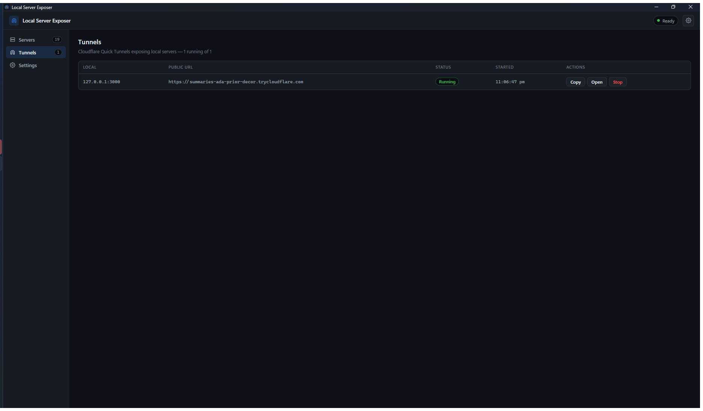
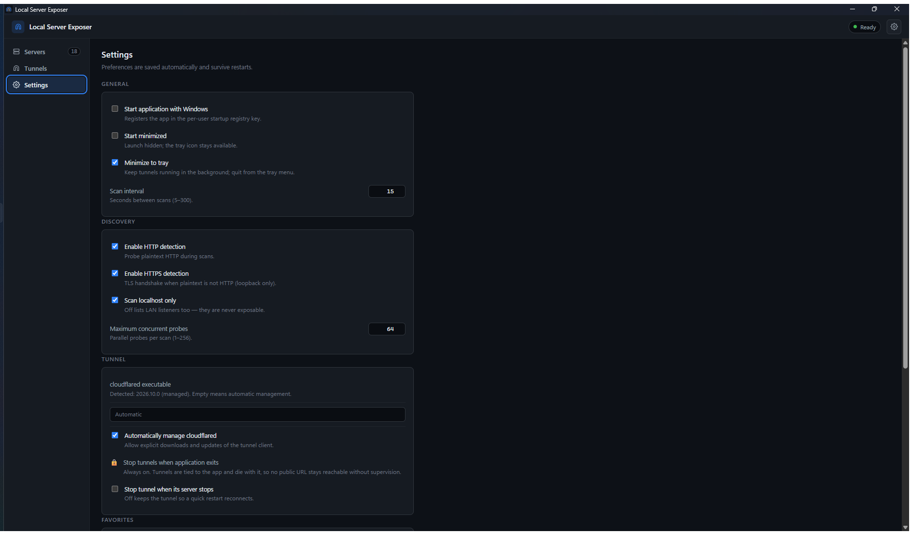

Share your local dev server with the world
A lightweight Windows app that finds the HTTP servers running on your
machine and gives the one you choose a public
https://….trycloudflare.com URL. No router changes, no port
forwarding, no public IP.
Version 1.0.0 · 2.78 MB per-user installer · Windows 10/11 x64
The problem
You started a dev server on localhost:3000. A client, a
teammate on another network, or a webhook needs to reach it. The usual
answers are all awkward: a tunnel CLI in another terminal, router port
forwarding, or deploying a preview build somewhere else.
Local Server Exposer puts that in one small desktop app: it lists what is actually listening on your machine, and one click turns a chosen server into a public HTTPS URL.
See it in action
Real screenshots from version 1.0.0.




What it does
Every item below is implemented in 1.0.0 — nothing is a placeholder.
Automatic discovery
Reads your machine's IPv4 listening sockets through the native Windows TCP table and shows the owning process for each port.
Honest classification
Each port is probed and labelled Ready (HTTP/HTTPS), Unsupported, or Unreachable — with a plain-language reason. Only HTTP/HTTPS can be shared.
One-click Quick Tunnels
Exposes the selected port at an ephemeral *.trycloudflare.com URL, with copy, open-in-browser and stop.
Confirmation every time
Every new tunnel and every retry asks first, naming the exact port and process. There is no "don't ask again".
Several tunnels at once
Each exposed port gets its own independent tunnel. Stopping one leaves the others running.
Never left behind
Tunnels are tied to the app: they stop when it exits and cannot survive a crash, a forced kill or a sign-out.
System tray & notifications
Closing the window keeps it in the tray. You get a desktop notification when a tunnel goes live or fails.
Search, filters, favorites
Search by port, process name or detected framework. Filter by HTTP, exposed or available. Star the ports you use.
Settings that persist
Scan interval, discovery options, favorites, start-with-Windows, and where to find the tunnel client.
Quick start
Three steps, about a minute.
- Start your local server — for example something serving on
http://localhost:3000. - Open the app. The port appears as a card with its process and the status Ready.
- Click Expose, confirm, and wait for the public URL, then copy it or open it in your browser.
System requirements
| Operating system | Windows 10 or 11, 64-bit (x64). ARM64 and non-Windows are not supported. |
|---|---|
| Memory | About 40 MB for the app; the WebView2 runtime adds roughly 300 MB. |
| Disk | About 3 MB installed, plus a one-off ~55 MB download of the tunnel client if you approve it. |
| Other software | Microsoft Edge WebView2 Runtime — normally already installed on Windows 10/11. The installer offers to fetch it if missing. |
| Internet | Needed to start a tunnel, and once to download the tunnel client. |
| Administrator rights | Not required. The install is per-user. |
Security, in plain language
Exposing a server makes it reachable from the public internet.
A Quick Tunnel URL is unguessable but bearer access: anyone who has the link can reach your server until you stop the tunnel. Treat it like a password — do not post it, and do not put it in a bug report.
- Confirm every exposure. Every tunnel and retry asks for confirmation, showing the exact port and process.
- Only HTTP and HTTPS can be shared, re-checked by the app itself immediately before each tunnel starts. Databases, SSH and admin ports are refused.
- Tunnels never outlive the app, so a public URL cannot keep serving without supervision.
- No telemetry and no analytics. Local logs are kept for 7 days with tunnel URLs redacted before anything is written.
- The installer is not code-signed, so Windows SmartScreen warns on first run. Verify the published SHA-256 checksum before choosing More info → Run anyway.
Download
| File | Size | SHA-256 |
|---|---|---|
LocalServerExposer_1.0.0_x64-setup.exe |
2.78 MB | f9c5b14266ea4ca4f337bc07053c6e3a160ead384286a82e75ecbc01a00c12a4 |
Older and newer builds, plus the checksum file, are on the releases page. Every release is verified automatically by a workflow that recomputes each checksum.
Frequently asked questions
- Does it need my router configured?
- No. Outbound connections only — no port forwarding, no static IP, no router access.
- Is there a usage or duration limit?
- The app imposes none. A tunnel lasts as long as it is running; restarting it produces a new URL.
- Can I use a custom domain or my Cloudflare account?
- Not in this version. Only anonymous Quick Tunnels are supported.
- Can it share a database or an SSH port?
- No, and it will refuse: exposure requires the target to answer as HTTP or HTTPS.
- Does it collect anything?
- No telemetry, no analytics, no account. See security and privacy.
- Why isn't the source code here?
- This is the public download and documentation site. The application ships as a compiled binary.